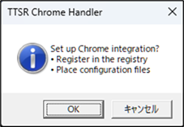
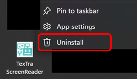

Installation
・ Installation
Download and run
the "msi" file to begin the installation process.
After installation,
please run the application once from the shortcut created on the
desktop.
This will complete the setup required for Chrome to
launch the application.

・ Uninstall
Right-click the app
icon in the Start menu,
then select Uninstall from the menu that
appears.

System
Requirements
64-bit version of Windows 10 or Windows
11
TexTra Chrome (browser extensions for Chrome and
Edge)